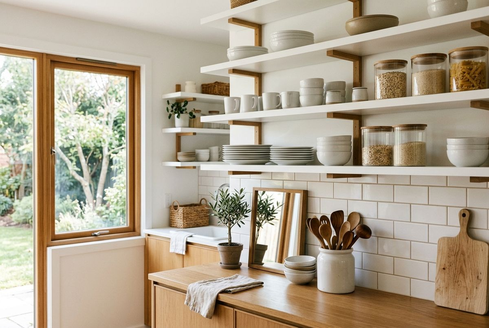

A kitchen is often the busiest room in the home, serving as a hub for cooking, eating, and gathering. Yet, behind closed doors, kitchen cabinets can quickly become a chaotic jumble of mismatched containers, cluttered spices, and rarely-used appliances. When your cabinets are disorganized, preparing meals feels more stressful and clean-up takes twice as long.
At SpaceSavvyLiving, we believe that an organized kitchen isn't just about aesthetics; it's about creating a smooth, calm flow that supports your daily routines. In this complete guide, we will walk you through a step-by-step process to reclaim your kitchen cabinet space, streamline your layout, and implement smart, renter-friendly systems that last.
1. Assess Your Current Setup
Before buying any bins or baskets, you must understand exactly what you have and what you actually use. Reorganizing a space without decluttering first is simply organizing clutter. Start by emptying your cabinets entirely, one section at a time. Group similar items together on your countertops or table to see the full scope of your inventory.
As you sort through your kitchen tools, ask yourself these essential questions:
- Have I used this item in the past 12 months?
- Is this duplicate item truly necessary (e.g., three separate vegetable peelers)?
- Is this dishware chipped or damaged beyond repair?
- Does this plastic storage container actually have a matching lid?
Create three distinct piles: Keep, Donate/Sell, and Discard. Once you have decluttered, wipe down the inside of your empty cabinets with a gentle cleaner to start with a fresh, clean canvas.
2. The Zone Method
The secret to a highly functional kitchen is arranging items based on how and where you use them. This is known as the Zone Method. By grouping items into logical zones, you minimize unnecessary steps across the kitchen and make cooking far more efficient.
We recommend dividing your kitchen cabinets into five core zones:
- Prep Zone: Positioned near your primary counter workspace. Keep mixing bowls, cutting boards, measuring cups, and prep tools here.
- Cooking Zone: Located immediately around the stove and oven. Store pots, pans, baking sheets, cooking oils, spices, and cooking utensils within arm's reach.
- Cleaning Zone: Under and around the kitchen sink. Store dish soaps, scrub brushes, trash bags, recycling bins, and cleaning agents.
- Consumables Zone: Your pantry space, food storage cabinets, and refrigerator. Keep daily snacks, grains, canned goods, and dry food items organized.
- Non-Consumables Zone: Storage for plates, bowls, drinking glasses, coffee mugs, and flatware. This zone is ideally placed close to the sink or dishwasher for easy unloading.
3. Essential Organizers
Once you have grouped your belongings into zones, it's time to introduce organizers that maximize your cabinet space. The goal is to make sure every item is visible and easy to access without having to lift three other things to reach it.
Here are two of our absolute favorite, editor-tested organizers that solve common cabinet frustrations:

Bamboo Expandable Drawer Organizer
A beautifully crafted silverware and utensil holder that expands horizontally to custom-fit standard kitchen drawers, eliminating sliding and clutter.
- Adjustable width to fit drawers 13 to 22 inches wide
- Made from sustainable, easy-to-clean natural bamboo
- Deep compartments maximize vertical drawer space

Clear Stackable Cabinet Shelf Organizer
Sturdy acrylic shelf risers that allow you to stack dishes, mugs, or canned goods without losing access to the bottom items.
- Heavy-duty acrylic supports up to 15 pounds safely
- Transparent design maintains a clean, minimalist aesthetic
- Renter-friendly—simply place inside, no mounting required
4. Upper vs Lower Cabinets
How you distribute items between your upper and lower cabinets depends largely on weight, safety, and frequency of use. As a rule of thumb, place heavier items down low and lighter items up high.
Refer to our quick comparison table below to determine the ideal placement for different kitchen items:
| Organizer Type / Category | Best For | Price Range | Our Pick |
|---|---|---|---|
| Drawer Dividers | Flatware, cooking utensils, junk drawers | $15 – $30 | Bamboo Expandable Organizer |
| Shelf Risers / Inserts | Plates, bowls, coffee mugs, pantry cans | $10 – $25 | Acrylic Clear Riser |
| Lazy Susans / Turntables | Oils, condiments, spices, corner cabinets | $12 – $28 | Single-Tier Non-Skid Turntable |
| Pan Racks / Lid Organizers | Heavy frying pans, baking sheets, lids | $18 – $35 | Adjustable Vertical Pan Rack |
| Under-Sink Pull-Out Bins | Cleaning supplies, sponges, trash bags | $25 – $50 | Two-Tier Sliding Under-Sink Rack |
5. Maintaining Organization
An organized kitchen is only as good as the habits that maintain it. Once your cabinet systems are in place, establish small routines to keep them that way. We recommend a simple one-in, one-out rule: if you purchase a new mug or pan, donate or discard an old one to prevent overcrowding.
Additionally, spend five minutes at the end of each week putting items back in their designated zones. Check expiration dates in your consumables zone monthly, and perform a quick wipe-down of high-use cabinet shelves every season. With regular upkeep, your kitchen will continue to feel like a calm, welcoming haven.
Are you 18-24 or a Student? Get 6 Months of Prime for $0!
Limited Time Offer (Ends Oct 9): Enjoy fast, free shipping, unlimited streaming, $0 food delivery (Grubhub+), fuel savings (10¢/gal), Prime Reading, unlimited Amazon Photos storage, and exclusive grocery deals. Claim your 6-month free trial of Prime for Young Adults today.
Try Prime for Free →Frequently Asked Questions
We recommend doing a quick review of your cabinet contents once every six months, particularly when the seasons change. A deep declutter and reorganization should be done once a year to assess expired goods, damaged items, and tools you no longer use.
Storing pots and pans vertically using a wire rack organizer is the best way to prevent scratching and save space. If you must stack them, place felt pan protectors or paper towels between each pan to protect their non-stick surfaces, and store lids in a separate vertical rack on the cabinet door or shelf.
Absolutely. Shelf risers are one of the most effective ways to double your storage capacity in cabinets with high, fixed shelves. They eliminate stack clutter, allowing you to access bottom plates or bowls without moving upper items, and are highly recommended for renter kitchens.
Focus on damage-free, freestanding solutions. Use acrylic shelf risers, tension rods for vertical pan dividers, over-the-door hooks or baskets, and non-adhesive shelf liners to protect cabinet surfaces. These options require zero drilling and can easily move with you to your next home.